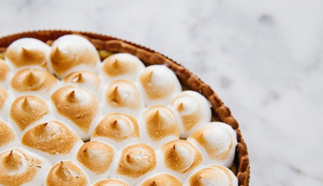

El clasico Lemon Pie
Es el preferido de los que les gusta lo dulce pero no lo empalagoso. El lemon pies es una
tarta, es decir,
una base de masa y un relleno. Como su nombre lo indica, esta hecha con jugo de limon, azucar y huevos. Todo
eso mezclado hace el famoso custard, el relleno amarillo que es tan tipico del lemonpie pie.
Ingredientes para la masa
- 200g gramos de harina 0000
- 5g. de azucar
- 1 huevo, 100g. de manteca
Ingredientes para la crema
- 150cc de jugo de limon
- 1 cucharada de ralladura de limon
- 4 yemas
- leche condensada
Ingredientes para el merengue
- 200g. gramos de harina 0000
- 5g. de azucar
- 1 huevo
- 100g. de manteca
Instrucciones
- Procesar o mezclar ligeramente la harina, el azúcar y la manteca fría curtada en cubitos, hasta
formar un arenado. Agregar el huevo y unir la masa sin trabajarla mucho. Envolver en film y llevar a
la heladera por 30 minutos aproximadamente.
- Precalentar el horno a temperatura media (180°C).
- Estirar sobre una mesada enharinada y tapizar un molde para tarta desmontable de 22 cm de diáme
Cocinar durante 20 minutos o hasta que comience a dorarse.
- Mezclar la leche condensada con 4 yemas, 150cc de jugo de limón e integrar la ralladura. Unir bi
verter sobre la masa precocida. Cocinar en horno moderado durante 15 minutos
- Colocar el azúcar en una cacerolita y cubrir con apenas con agua. Cocinar hasta obtener la textura
de un merengue italiano
- Unos minutos antes del punto del almíbar, comenzar a batir las claras. Cuando empiecen a formar
picos, añadir gota a gota el almíbar caliente sin dejar de batir hasta que se enfríe.
- Decorar con el merengue y gratinar.